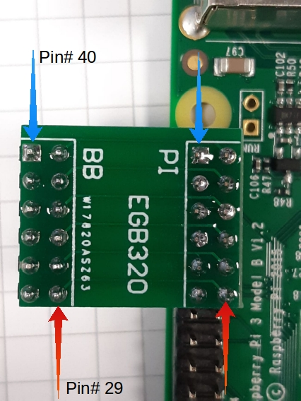
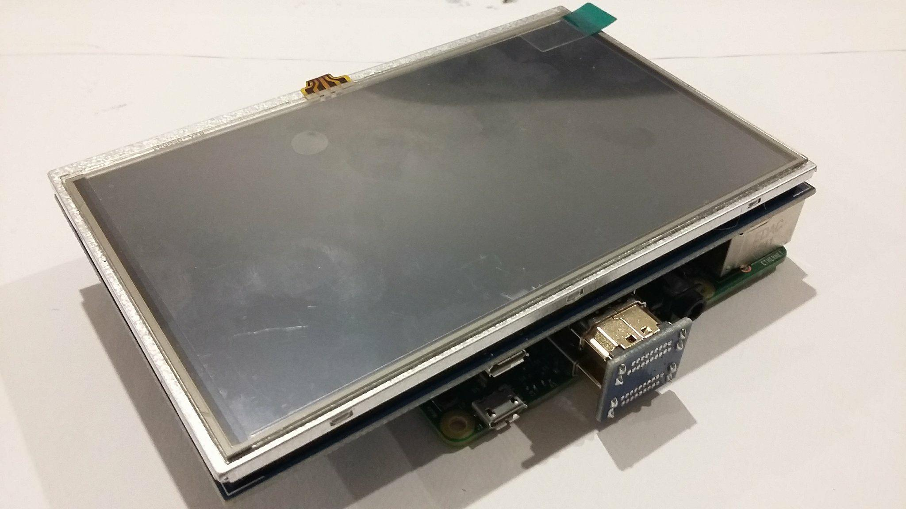

Setting Up The Raspberry Pi
This article discusses how you setup the Raspberry Pi hardware for the EGB320 design project. We recommend you read the general introductory guide before setting up your Raspberry Pi.
Imaging your MicroSD Card
The operating system for your Raspberry Pi will be hosted on a microSD card inserted into the bottom of the Pi. The MicroSD card included in your EGB320 kits comes blank; a clean platform for you to build upon. You must image this microSD card prior to attempting to use your Pi. It is up to you how you wish to set this up, however some installation processes can be very time consuming! To minimise your setup time, we have created an EGB320 Raspbian Jessie image for you to use, if you so choose. Instructions regarding how to image your MicroSD card can be found in the Imaging Your MicroSD Card document.
Installing Your MicroSD Card
The pre-configured EGB320 Raspbian Jessie image you installed in the previous step contains;
- OpenCV 3,
- Python 2.7,
- Python code editing and compiling environments,
- The LCD touchscreen drivers,
- A QUT WiFi configuration script, and
- A demonstration python script for the camera
You should have already installed the Raspbian image in the previous step. If you have not already inserted your microSD card, simply insert it into the microSD slot located on the right hand side of the Raspberry Pi in the following image.
Attaching the GPIO Breakout Board (Optional)
If you plan on directly attaching the screen to the GPIO pins and not via cables then we recommend you attach the small GPIO breakout board now. If you do not attach this small board and have the screen directly attached you will not be able to access the GPIO pins. The small GPIO breakout board should be connected to pins 29-40 inclusive, which are the GPIO pins located closest to the USB/ethernet ports.


Attaching The Raspberry Pi Camera
To install the camera module, first locate the camera cable slot which is situated next to the HDMI port. Next lift the small black clip of the cable slot; you may need to remove a piece of brown-ish plastic tape. Insert the ribbon cable into the slot with the blue strip facing the USB/Ethernet ports. Push the clip back into place ensuring the cable is firmly locked in place. If you plan on attaching the touchscreen, we recommend that you place the camera so the ribbon cable extends over the USB/Ethernet ports.
Attaching The Screen
First attach the four supplied stand-offs to the four screws which can be found on the back of the screen.
Next attach the screen's female header to the Raspberry Pi GPIO pins. The HDMI ports on the screen and Raspberry Pi should align. With the stand-offs in place the screen should only fit to the Raspberry Pi in one configuration. Now using the HDMI to HDMI adapter board connect the two HDMI ports. IMPORTANT: if you do not align the pins correctly while attaching the screen, and proceed to power the Raspberry Pi, you can cause damage to the touch capabilities of the LCD screen. We will not be replacing any damaged touch screens.

Powering the Raspberry Pi
Before powering the Raspberry Pi connect the supplied Edimax WiFi dongle as well as a USB mouse and keyboard, and a HDMI screen if you wish.
To power the Raspberry Pi simply use the 5V Wall Power Supply and plug it into the micro USB connector onboard. A red LED near the micro USB port will light up, and if you have a screen attached it should show some activity. It may take a moment to boot up, especially when booting it for the first time.
IMPORTANT: the Raspberry Pi 3B requires a 5V power supply that can supply 2.5A and you should only ever supply power via the micro USB connector. Supplying power via the 3.3V and 5V rails within the GPIO pin header is risky, as it bypasses the protection circuitry. Additionally, you should always try to power down the Raspberry Pi properly (i.e. main menu -> shutdown). Only pull the power plug if the Raspberry Pi is not responding and you have no remaining options.
Setting Up The Screen
If you are using the LCD screen it should boot up and display correctly. However, at times you may find your Raspberry Pi displays poorly either on the LCD screen or on a standard HDMI desktop monitor. To get your Raspberry Pi to display correctly you will need to run a command within a terminal. To open a terminal you can either select the terminal icon within the menu bar on the top left of the screen, or press CTRL+ALT+T on the keyboard.
To get the Raspberry Pi to display correctly on the LCD screen, run the following command in a terminal. This command will cause the Raspberry Pi to reboot.
sudo ./LCD-show/LCD5-showTo get the Raspberry Pi to display correctly on a standard HDMI desktop monitor run the following command within a terminal.
sudo ./LCD-show/LCD-hdmiConfiguring and Testing The Raspberry Pi Camera
To be able to use the Rasberry Pi Camera, you will need to ensure the camera module is enabled. To do this click on the Raspberry Pi Icon which can be found in the top left corner. Then in the menu select Preferences -> Raspberry Pi Configuration. Within the Raspberry Pi Configuration Display, go to the Interfaces tab and ensure that the Camera is enabled.
To test your camera is working open up a terminal (CTRL+ALT+T) and run the following command. This will run a Python script that should show you a live feed of the camera.
python Desktop/camera_test.pyConnecting the Raspberry Pi to the QUT WiFi
To connect your Raspberry Pi to the QUT Wifi open a terminal (CTRL+ALT+T), run the following command and enter your QUT username and password when prompted. It may take a few moments to connect.
sudo ./Desktop/ConnectToQUTWifi.shTo connect to any other WiFi network simply attach the Raspberry Pi to a display and connect to your desired network as you would on a standard computer. The network interfaces icon can be found on the top right of the screen.
Reducing the Number of Touch Screen Pins
There are two methods of reducing the number of pins required by the touch screen.
Method 1 - simply connect the screen to the Raspberry Pi using the HDMI and Mico USB. This will provide the screen with power and display, however the touch interface will not work. The touch interface requires the screen to communicate with the Raspberry Pi via SPI. Feel free to use a wireless/bluetooth keyboard instead of connecting the SPI.
Method 2 - the provided 5 inch touch screen comes with a 26-pin female connector. However, it does not actually require all 26 pins to operate correctly; in fact it only needs 9 pins in total. The touch screen requires power, ground, and the SPI serial communication pins. So if you require access to more GPIO pins, or want flexibility with the placement and orientation of the touch screen and Raspberry Pi, you can do so. The following figures and table display the required pin connections for the touch screen, and indicate the positioning of these pins on the Raspberry Pi. The BOARD numbering convention has been used, but you can convert to BCM if you wish using the provided Raspberry Pi pinout.

| Touch Screen and Pi Pin Number | Pi Pin Description |
|---|---|
| 2 | 5V |
| 4 | 5V |
| 6 | Ground |
| 19 | SPI - MOSI |
| 21 | SPI - MISO |
| 22 | GPIO |
| 23 | SPI - Clock |
| 25 | Ground |
| 26 | SPI - CE1 (Chip Select) |